The story of
the King of Pop
Michael
Jackson
Born August 29, 1958, Gary, Indiana,
Died June 25, 2009, Los Angeles, California

Known as the "King of Pop," Michael Jackson, american singer, songwriter, and dancer, was the most popular entertainer in the world in the early and mid‑1980s.
s a child, Michael became the lead singer of his family's popular Motown group, the Jackson 5. He went on to a solo career of astonishing worldwide success, delivering No. 1 hits from the albums Off the Wall, Thriller, and Bad.
Thriller remains one of the best-selling albums in history. In his later years, Michael was dogged by allegations of child molestation. The 13-time Grammy Award winner died in 2009 at age 50 of a drug overdose just before launching a comeback tour.
Michael Joseph Jackson was born on August 29, 1958, in Gary, Indiana. He was the eighth of 10 children born to Joseph Jackson, a crane operator, and Katherine Jackson, a homemaker and a devout Jehovah's Witness. Both of Jackson's parents previously had musical aspirations themselves: Katherine played clarinet and piano and had aspired to be a country singer, while Joseph was a guitarist who performed in local R&B bands. They encouraged their children to pursue musical ambitions, and Michael's career in music began at the age of 5 under his father's encouragement.

Almost all of Jackson's siblings made marks in the music industry, including Rebbie, Jackie, Tito, Jermaine, La Toya, Marlon, Randy, and Janet Jackson. His brother Brandon, Marlon's twin, died shortly after birth. Joseph pushed his children hard to succeed, making them rehearse five hours a day after school, and was reportedly known to become violent with them. He was said to beat them with a belt buckle or electric kettle cord and to order them to break a branch off a tree if they got a dance step wrong so he could hit them with it.
Joseph molded his sons into a musical group in the early 1960s that would later become known as the Jackson 5. At first, the Jackson Family group consisted of Jackson's older brothers Tito, Jermaine, and Jackie. Michael joined his siblings when he was 5 years old and emerged as the group's lead vocalist. He showed remarkable range and depth for such a young performer, impressing audiences with his ability to convey complex emotions. They officially became the Jackson 5 when older brother Marlon joined the group.

Jackie, Marlon, Randy, Tito and Michael of the Jacksons 5 pose for a studio group portrait in 1977 in Amsterdam, Netherlands.
Michael and his brothers spent endless hours rehearsing and polishing their act. At first, the Jackson 5 played local gigs and built a strong following. They recorded one single on their own, "Big Boy", with the B-side "You've Changed", but the record failed to generate much interest. The group moved on to working as the opening act for R&B artists such as Gladys Knight and The Pips, James Brown, Sam and Dave. Many of these performers were signed to the legendary Motown record label, and the Jackson 5 eventually caught the attention of Motown founder Berry Gordy.


Impressed by the group, Gordy signed the group to his label in early 1969. Michael and his brothers moved to Los Angeles, where they lived with Gordy and with Diana Ross of the Supremes as they got settled. The Jackson 5 made its first television appearance during the 1969 Miss Black American Pageant, performing a cover of "It's Your Thing". Their first album, Diana Ross Presents the Jackson 5, hit the charts in December 1969, with the single "I Want You Back" reaching No. 1 on the Billboard Hot 100 chart shortly afterward.

Michael Jackson poses for a photoshoot at his Hollywood Hills home on April 20, 1972 in Los Angeles California.
More chart-topping singles quickly followed, such as "ABC", "The Love You Save", and "I'll Be There". For several years, Michael and the Jackson 5 maintained a busy tour and recording schedule, under the supervision of Gordy and his Motown staff. The group became so popular that it even had its own self-titled cartoon show, which ran from 1971 to 1972. Michael also popularized the "robot dance" after using the move during a 1973 performance of the song "Dancing Machine" on The Mike Douglas Show.
Despite the group's great success, there was trouble brewing behind the scenes. Tensions mounted between Gordy and Joseph over the management of his children's careers, with the Jacksons wanting more creative control over their material. The group officially severed ties with Motown in 1976, though Jermaine remained with the label to pursue his solo career. Now calling themselves the Jacksons, the group signed a new recording deal with Epic Records. By the release of its third album for the label, Destiny (1978), the brothers had emerged as talented songwriters.

The Jackson 5
in Santa Monica 1969
Jackie, Marlon, Randy, Tito and Michael of the Jacksons 5 pose for a studio group portrait in 1977 in Amsterdam, Netherlands.
Michael Jackson poses for a photoshoot at his Hollywood Hills home on April 20, 1972 in Los Angeles California.
The Jackson 5
in Santa Monica 1969
Day and Night

Michael began his solo career while simultaneously performing with the Jackson 5. He released his debut solo album at age 13 with Got to Be There (1971), making the charts with the title track. He had his first solo No. 1 single with the title track from his sophomore album Ben (1972), which he recorded for the 1972 film of the same name about a killer rat. Michael followed those albums with Music and Me (1973) and Forever, Michael (1975), the latter of which was his last album with Motown Records.
As Michael's stardom rose, he tried his hand at acting, and the experience left its mark on his music, too. Michael portrayed the Scarecrow in the Sidney Lumet directed film The Wiz (1977), starring alongside Diana Ross and Nipsey Russell. While living in New York City to make the film, Michael frequently visited the Studio 54 nightclub and was exposed to early hip-hop music, which contributed to his beatboxing in future songs like "Workin’ Day and Night".
Michael achieved his solo career breakthrough with Off the Wall (1979), his first album with Epic Records and his first produced by Quincy Jones, whom he met while working on The Wiz. An infectious blend of pop and funk, Off the Wall featured the Grammy Award–winning single "Don't Stop 'Til You Get Enough", along with such hits as "Rock with You", "She's Out of My Life", and the title track. Critics felt the album moved Michael from the pop music of his youth into a more complex sound, and some have called it one of the best pop albums ever made.
Michael was still performing with his brothers at this time, and the overwhelmingly positive response to Off the Wall helped the Jacksons as a group. Their album Triumph (1980) sold more than 1 million copies, and the brothers went on an extensive tour to support the recording. At the same time, Michael continued exploring more ways to branch out on his own. In 1983, Michael embarked on his final tour with his brothers to support the album Victory (1984). Michael's duet with Mick Jagger called "State of Shock" was the most successful single from the album.
Off
the Wall

Product with Quincy Jones for this solo breakthrough a disco-era masterpiece propelled by gleaming melodies, compulsive grooves and some of Michael's most spectacular performances.

Thriller (1982), Michael Jackson's 6th solo album, was an unprecedented success. Today, in 2023, it's still recognized by Guinness World Records as the best-selling album of all time.


Thriller having sold 67 million copies worldwide and 34 million units in the United States alone. The album stayed on the charts for 80 weeks after its release, holding the No. 1 spot for 37 weeks, and generated seven Top 10 hits, including "Thriller", "Billie Jean", "Beat It", "Human Nature", "Wanna Be Startin' Somethin", and "P.Y.T. (Pretty Young Thing)".
The album garnered 12 Grammy Award nominations and notched eight wins, both records at the time. Michael also filmed an elaborate music video for the album's title track. Directed by filmmaker John Landis, the 14-minute "Thriller" mini-movie features a horror plot that culminates with Michael dancing with dozens of zombies in an abandoned city street.


Following its debut on MTV on December 2, 1983, it was hailed as one of the greatest music videos of all time and became the first music video to be selected for the National Film Registry in 2009.

On a 1983 television special honoring Motown, Michael performed his No 1 hit "Billie Jean" and debuted the moonwalk, which became one of his signature moves.
The dance step, which R&B musician Jeffrey Daniel had taught him three years earlier, involves the dancer gliding backwards despite bodily actions that suggest. The much-lauded dance performance further boosted sales for the already-successful Thriller album.
The New York Times hailed Michael as a "musical phenomenon," writing: "In the world of pop music, there is Michael Jackson and there is everybody else."

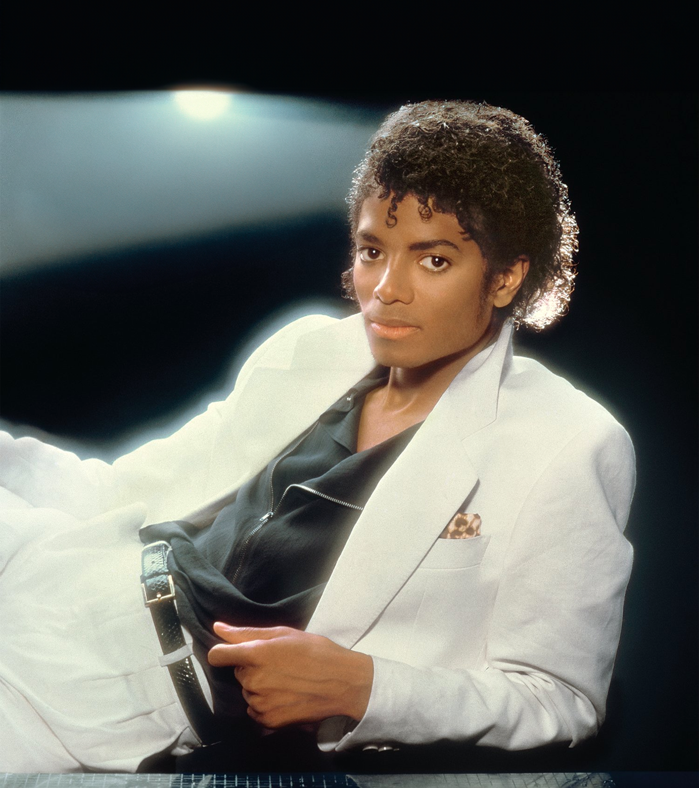
Thriller
( album )
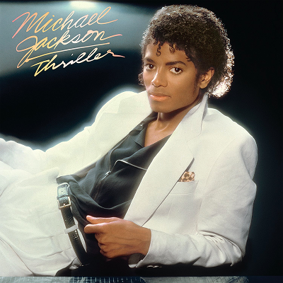
With the ongoing backlash against disco music at the time, Michael moved in a new musical direction, resulting in a mix of pop, post-disco, rock, funk, and R&B sounds.
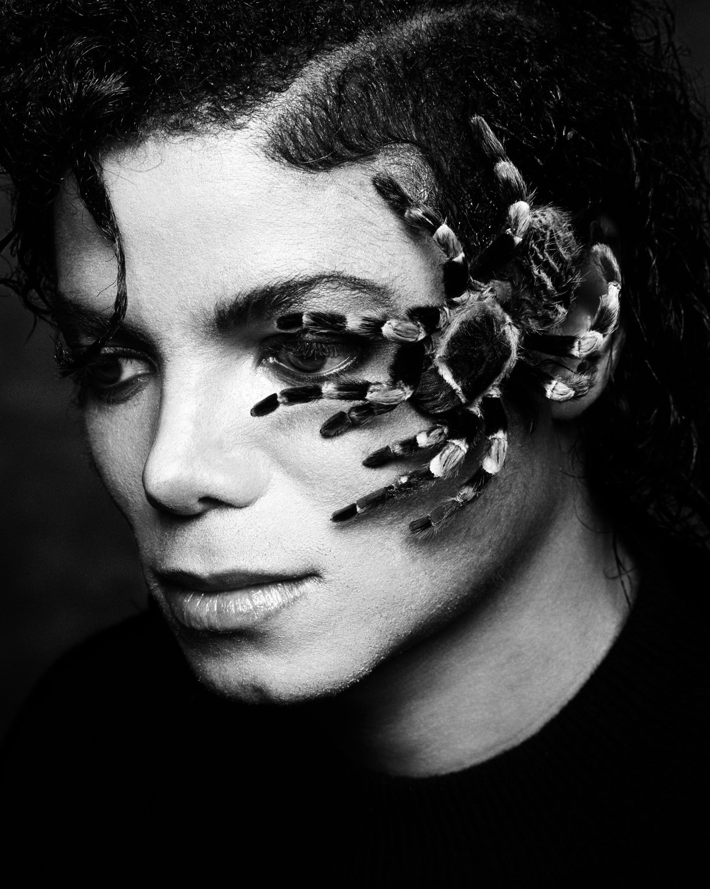
Michael signed a record-breaking 5 million dollars
promotional deal with PepsiCo in November 1983, launching
the brand's youth-targeted New Generation campaign.
However, Michael ended up filing a lawsuit against Pepsi when, during filming of a simulated concert for a commercial, pyrotechnics accidentally set Michael's hair on fire, resulting in second- and third-degree burns on his scalp. Michael had surgery to repair his injuries and is believed to have begun experimenting with plastic surgery around this time. His face, especially his nose, would become dramatically altered in the coming years.
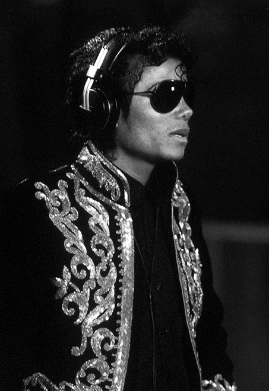
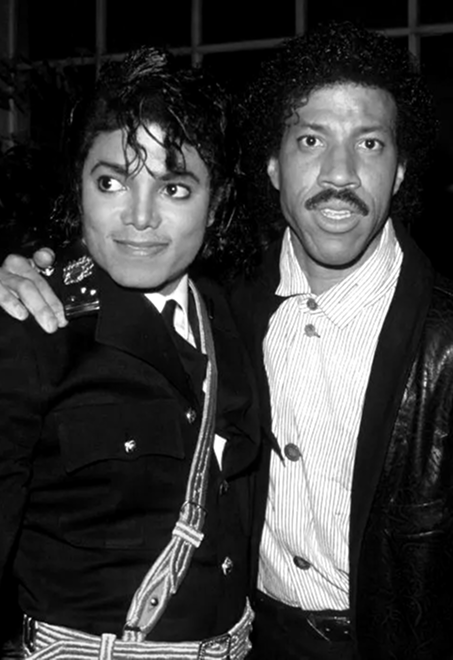
In 1985, Michael showed his altruistic side by working with Lionel Richie to co-write "We Are the World", a charity single for the non-profit organization USA for Africa. A veritable who's who of music stars participated in the project, including Ray Charles, Bob Dylan, Willie Nelson, Bruce Springsteen, and Tina Turner.
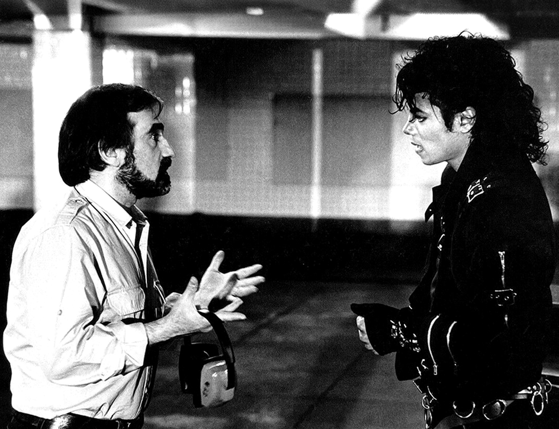
It became one of the top-selling singles of all time and raised, by some accounts, more than $75 million for humanitarian aid to fight poverty in Africa.
Five years after Thriller, Michael released his highly-anticipated follow-up album Bad (1987). Although unable to duplicate the phenomenal sales of Thriller, Bad still reached the top of the charts and became the first album to feature five No. 1 hits with "I Just Can't Stop Loving You," "Bad," "The Way You Make Me Feel," "Man in the Mirror," and "Dirty Diana." Filmmaker Martin Scorsese directed the title track's music video, which featured a then-unknown Wesley Snipes and involved an elaborate story about delinquent teenagers and gang violence. Michael spent more than a year on the road, playing concerts to promote the album.
In 1988, Michael bought 2,700 acres of property in Los Olivos, California, for $17 million and had it converted into Neverland Ranch, a home and private amusement park that he owned until 2005. Named after the fantasy island from the Peter Pan story, it included a zoo, train, Ferris wheel, and 50-seat movie theater. Several exotic pets were kept at the ranch, including Michael's famous pet chimpanzee Bubbles.
Around the late 1980s, rumors began swirling that Michael was lightening the color of his skin to appear more white and sleeping in a special oxygen chamber to increase his lifespan. In 1993, Michael agreed to a rare television interview with Oprah Winfrey to quell rumors. He explained that the change in his skin tone was the result of a skin condition known as vitiligo, and he opened up about the abuse he suffered from his father.
Bad
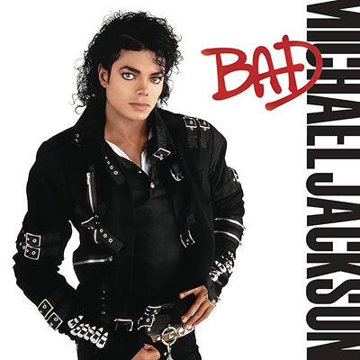
Michael adopted an edgy look and sound with Bad, departing from his signature groove-based style and high-pitched vocals. The album incorporates pop, rock, funk, R&B, dance, soul, and hard rock styles.
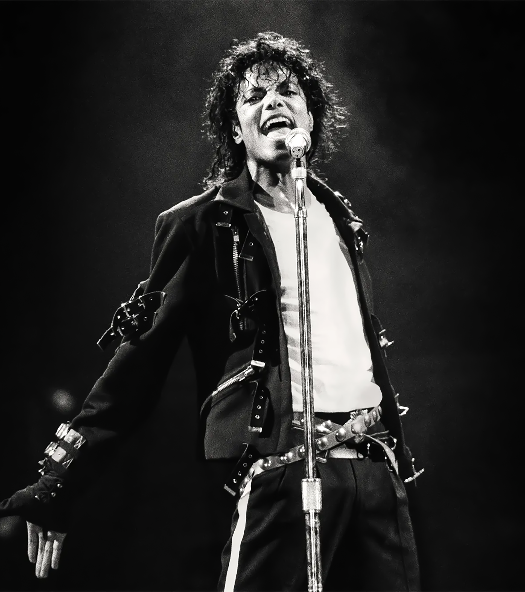
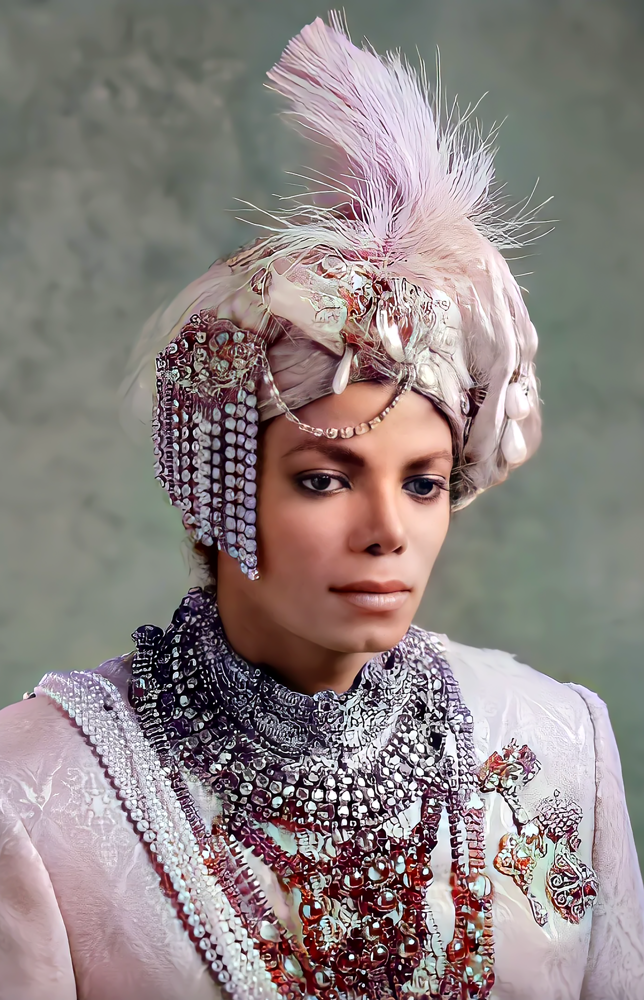
In 1991, Michael released his eighth solo album Dangerous, his first without Quincy Jones in 16 years. The album marked a different direction for Michael and mixed various genres.
Including R&B, funk, gospel, hip-hop, rock, industrial, and classical. It included the hit single "Black or White", with an accompanying music video directed by Landis and featuring a cameo appearance by child star Macaulay Culkin. The final minutes of the video featured Michael making sexual gesturing and violently damaging cars and buildings, which drew criticism from some viewers. Michael issued an apology and edited the video to remove these elements.
Michael's music continued to enjoy widespread popularity in the following years. In 1993, he performed at several important events, including the halftime show of Superbowl XXVII. However, 1993 also saw the first of several child molestation allegations against Michael, when a 13-year-old boy claimed that the music star had fondled him. Michael was known to have sleepovers with boys at his Neverland Ranch, but this was the first public charge of wrongdoing. The police searched the ranch, but said they found no evidence to support the claim. The following year, Michael settled the case out of court with the boy's family.
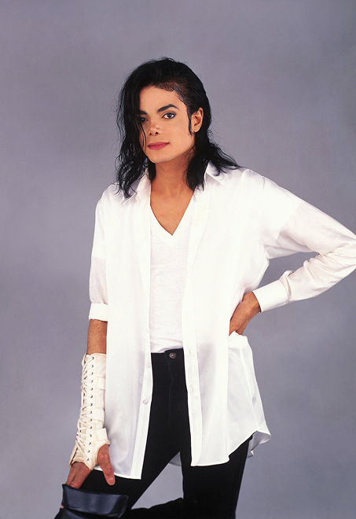
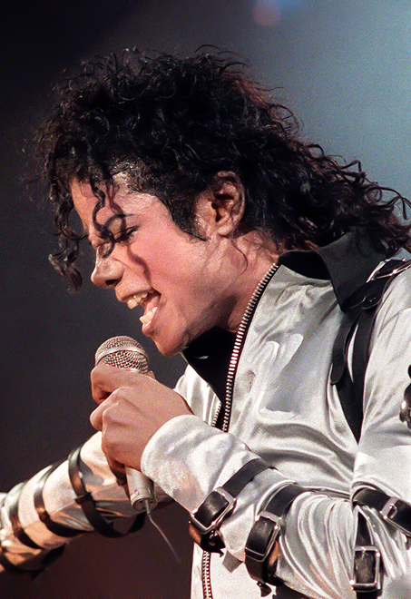
In the 2003 television documentary Living with Michael Jackson, British journalist Martin Bashir spent several months with the singer, even getting him to discuss his relationships with children. Michael admitted that he continued to have children sleep over at his ranch, even after the 1993 allegations and that sometimes he slept with the children in his bed. "Why can't you share your bed? That's the most loving thing to do, to share your bed with someone," Michael told Bashir.
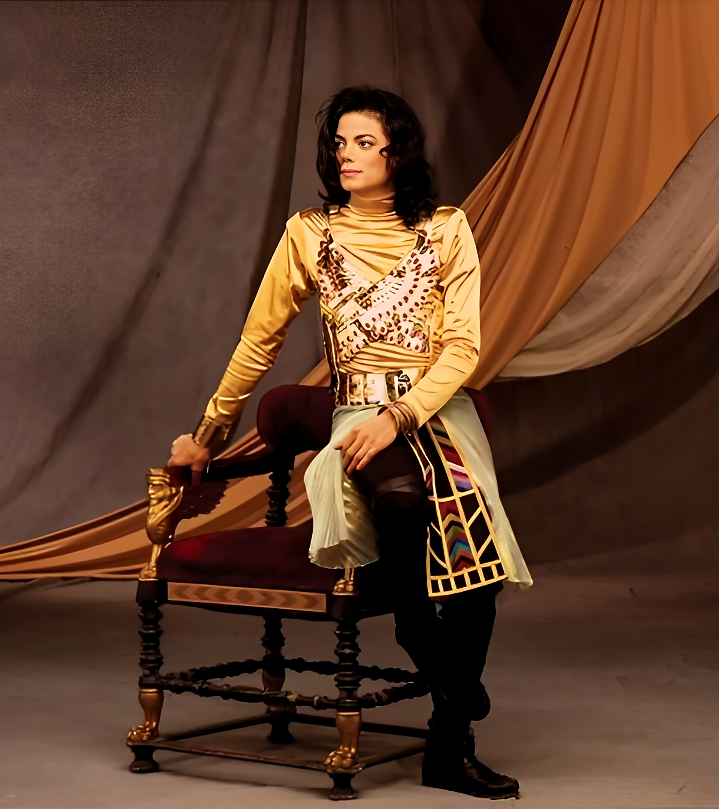
Dan-
gerous
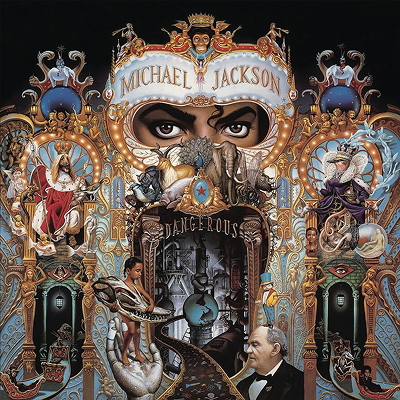
Dangerous is considered an artistic change for Michael, with his music focusing on more socially conscious material, and including a broader range of sounds and styles.
I'm tired of
Injustice
Michael's musical career began to
decline with the lukewarm reception to HIStory: Past,
Present, and Future, Book I (1995). The two-disc album
featured a greatest hits compilation on disc one and new material on
disc
two that included collaborations with Janet
Jackson, The Notorious B.I.G., Shaquille
O'Neal, and Slash. HIStory was considered
Michael's most personal album, with lyrics
pertaining to his child abuse allegations and
anger of his treatment by the media. The
record spawned two hits, "You Are Not
Alone" and his duet with sister Janet,
"Scream". The spaceship-themed video for
the latter song cost a record-setting $7 million
to produce and earned a Grammy Award for
its slick effects. Another track from the album,
"They Don't Care About Us", brought
Michael intense criticism for using an
anti-Semitic term.
In 2001, Michael released Invincible, his final studio album prior to his death. It cost $30 million to produce, making it the most expensive album ever made. The album touched upon such topics as isolation, social issues, and Michael's continued objections to the media. Despite debuting at No. 1 on the Billboard charts, it received mixed reviews from critics. Invincible was released as Michael was having legal issues with Sony over the rights to his master recordings, which escalated when Michael called Sony Music Chairman Tommy Mottola a racist who exploits Black artists.
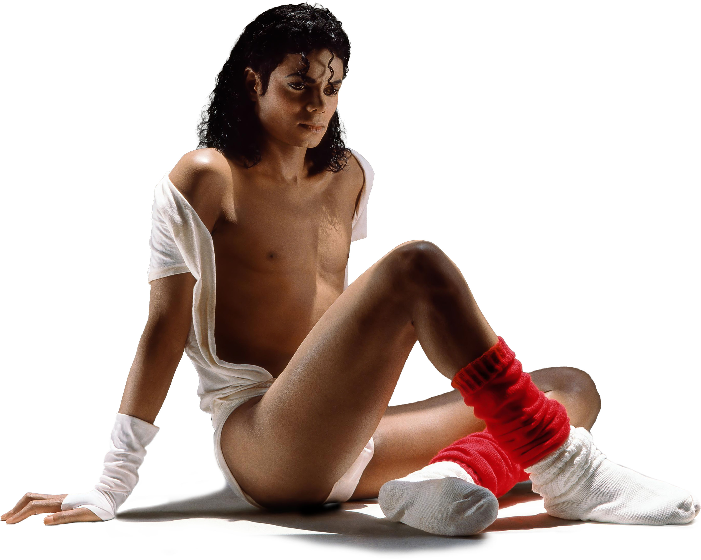
Stop pressurin' me
Make me Wanna Scream
Stop pressurin' me
By the turn of the century, he was increasingly becoming known for his eccentricities, which included wearing a surgical mask in public. In 2002, Michael made headlines when he seemed confused on stage at the MTV Video Music Awards. In 2002, he received enormous criticism for dangling his baby son Blanket over a balcony while greeting fans in Berlin, Germany. In a later interview, Michael explained that "We were waiting for thousands of fans down below, and they were chanting they wanted to see my child, so I was kind enough to let them see. I was doing something out of innocence".
In 2003, Michael encountered more legal woes when he was arrested on charges related to incidents with a 13-year-old boy. He faced 10 counts in total, including lewd conduct with a minor, conspiracy to commit child abduction, false imprisonment, and extortion. The resulting 2005 trial was a media circus, with fans, detractors and camera crews surrounding the courthouse. More than 130 people testified, and Michael's accuser described via videotape how he had been given wine and molested. However, the jury found problems with his testimony, as well as that of his mother. Michael was found not guilty of all charges on June 14, 2005.
Past, Present
& Future, Book I
HIStory
(June 20, 1995)
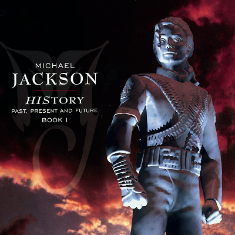
Double album containing the 9th studio album and first greatest hits album of material released on the Epic label. It was Michael's 5th album released through Epic Records, and the first on his label MJJ Productions.
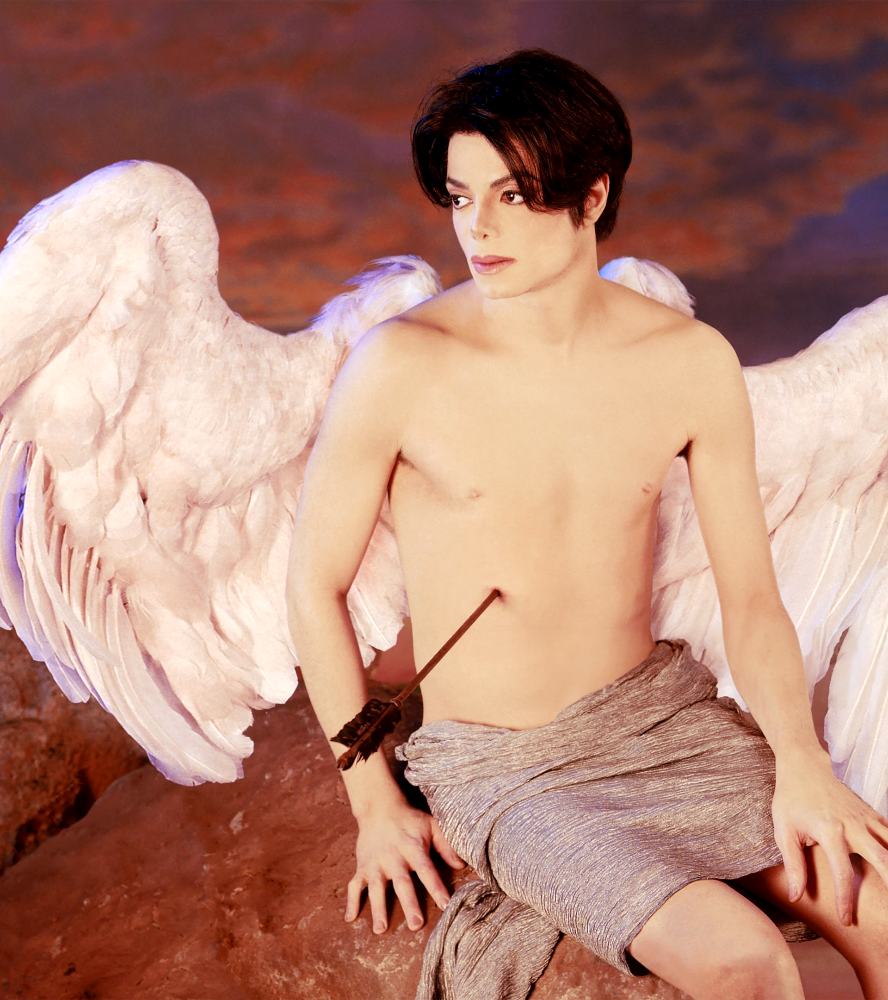
In August 1994,
Michael announced
that he had married
Lisa
Marie
Presley
The daughter of Rock icon Elvis Presley. The union proved to be short-lived, as they divorced in 1996. Some thought that the marriage was a publicity ploy to restore Michael's image after child molestation allegations.
Later in 1996, Jackson wed nurse Debbie Rowe. Michael Jackson and Debbie Rowe had two children together through artificial insemination.
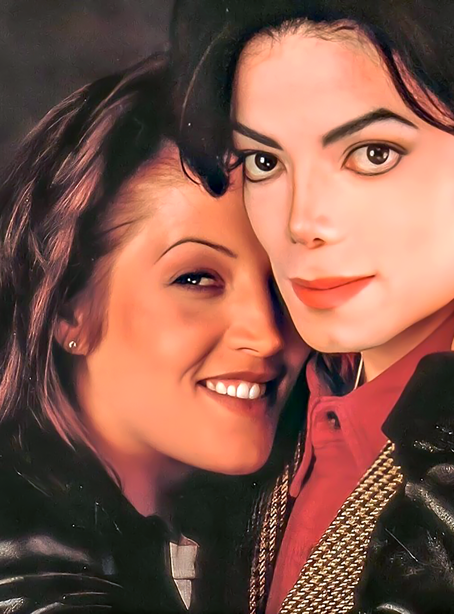
Son Michael Joseph Jackson Jr., born in 1997 and known as Prince Jackson, and daughter Paris Michael Katherine Jackson, born in 1998.
When Debbie Rowe and Michael Jackson divorced in 1999, Michael received full custody of their two children. Michael would go on to have a third child, Prince Michael Jackson II who went by "Blanket" and now "Bigi," with an unknown surrogate in 2002.
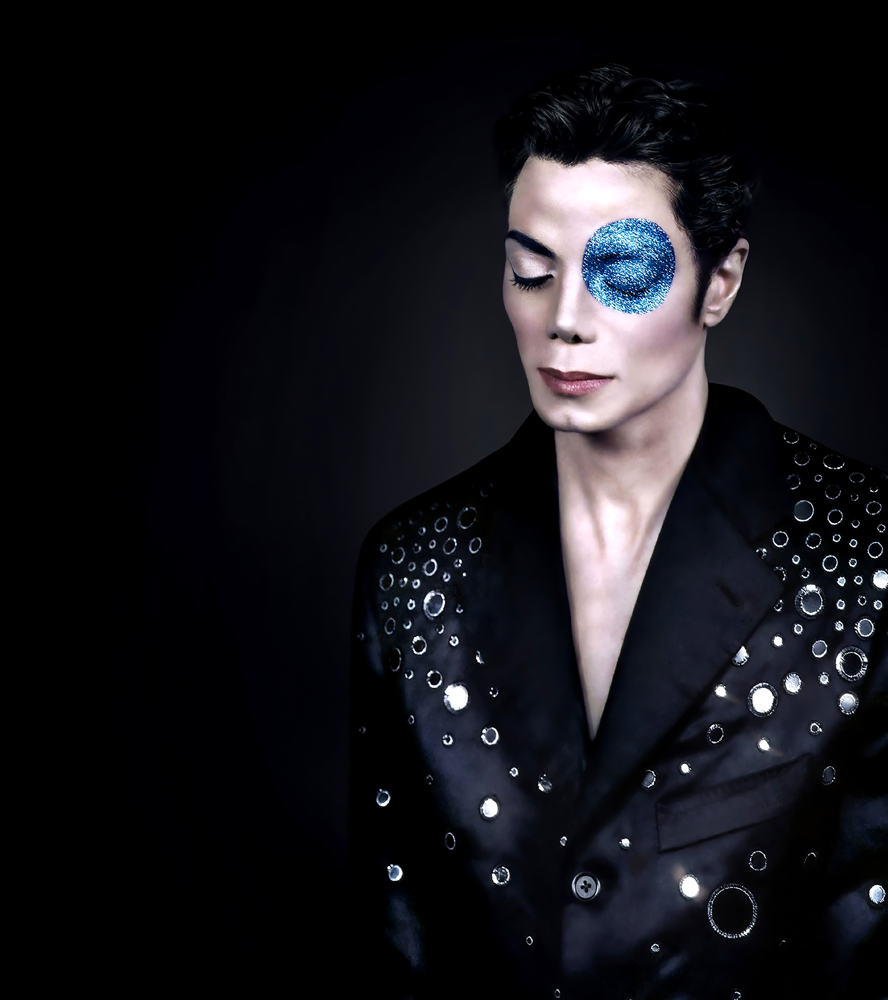
In-
vincible
(October 30, 2001)
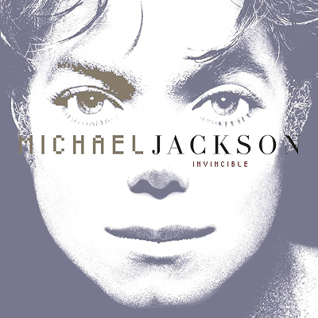
Last album before his death in 2009. It incorporates R&B, pop & soul, & similarly to Michael's previous material, the album explores themes such as love, romance, isolation, media criticism, and social issues.
Michael
Died on
June 25
At the age of 50
Michael Died
on June 25 at
the age of 50
June 25, 2009, at the age of 50, after suffering a cardiac arrest in his Los Angeles home. CPR attempts failed, and he was rushed to the hospital, where he died later that morning. In February 2010, an official coroner's report revealed Micheal's cause of death was acute propofol intoxication, or a lethal overdose on a prescription drug cocktail including the sedatives midazolam, diazepam, and lidocaine.
Aided by his personal physician Dr. Conrad Murray, Micheal had been taking sedative drugs to help him sleep at night. Murray told police that he believed Micheal had developed a particular addiction to propofol, which Micheal referred to as his "milk." Murray reportedly administered propofol by IV in the evenings, in 50-milligram dosages, and was attempting to wean the pop star off the drug around the time of his death.
A police investigation revealed that Murray was not licensed to prescribe most controlled drugs in the state of California. The steps he took to save Micheal also came under scrutiny, as evidence showed that the standard of care for administering propofol had not been met, and the recommended equipment for patient monitoring, precision dosing, and resuscitation had not been present. As a result, Micheal's death was ruled a homicide. Murray was convicted of involuntary manslaughter on November 7, 2011, receiving a four-year maximum prison sentence.
In 2013, the Jackson family launched a wrongful death lawsuit against AEG Live, the entertainment company that promoted Micheal's planned comeback series in 2009. They believed that the company had failed to effectively protect the singer while he was under Murray's care. Micheal family lawyers sought up to $1.5 billion — an estimation of what Micheal could have earned to that point — but in October 2013, a jury determined that AEG wasn't responsible for the singer's death.
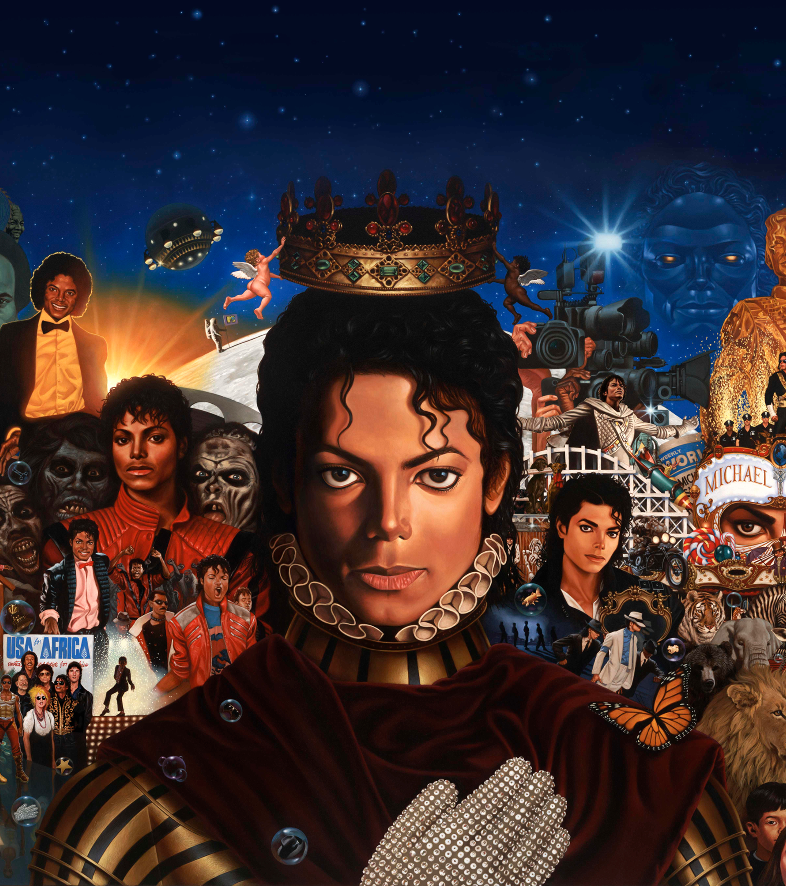
n July 7, 2009, a televised memorial was held for Michael's fans at the Staples Center in downtown Los Angeles. While 17,500 free tickets were issued to fans via lottery, an estimated 1 billion viewers watched the memorial on television or online. Michael's death resulted in an outpouring of public grief and sympathy. Memorials were erected around the world, including one at the arena where he was set to perform and another at his childhood home in Gary, Indiana. The Jackson family held a private funeral on September 3, 2009, at the Forest Lawn Memorial Park in Glendale, California, for immediate family members and 200 guests. Celebrity mourners included Michael's ex-wife Lisa Marie Presley and actor Elizabeth Taylor.
Over the course of his career, Michael had notched 38 Grammy Award nominations and 13 wins
Including Album of the Year for Thriller, Record of the Year for "Beat It", Song of the Year for "We Are The World", and his first Grammy in 1980 for Best Male R&B Vocal Performance on "Don't Stop 'Til You Get Enough". Among his other awards and honors are the 1993 Grammy Legend Award, his 2001 induction to the Rock & Roll Hall of Fame, and The Recording Academy's Lifetime Achievement Award.
A documentary of Michael's preparations for his final tour, entitled This Is It, was released in October 2009.
he film, which features a compilation of interviews, rehearsals, and backstage footage of its star, made $23 million in its opening weekend and went on to make $261 million worldwide. A handful of posthumous albums were released in the years after Michael's death. The first, Michael, was released in December 2010 amid controversy about whether the singer actually performed some of the tracks. Brother Randy was among those who questioned the authenticity of the recordings, but the Jackson estate later refuted the claims, according to The New York Times. The second album, Xscape (2014), featured R&B star and Michael protege Usher performing the single "Love Never Felt So Good". The album debuted at No. 2 on Billboard's Top 200 Album chart.
Since his death, Michael has been profiled in multiple biographies and inspired the creation of two Cirque du Soleil shows. He was posthumously honored with the 2018 Elizabeth Taylor AIDS Foundation Legacy Award for Humanitarian Service, with children Paris and Prince Michael accepting on his behalf.
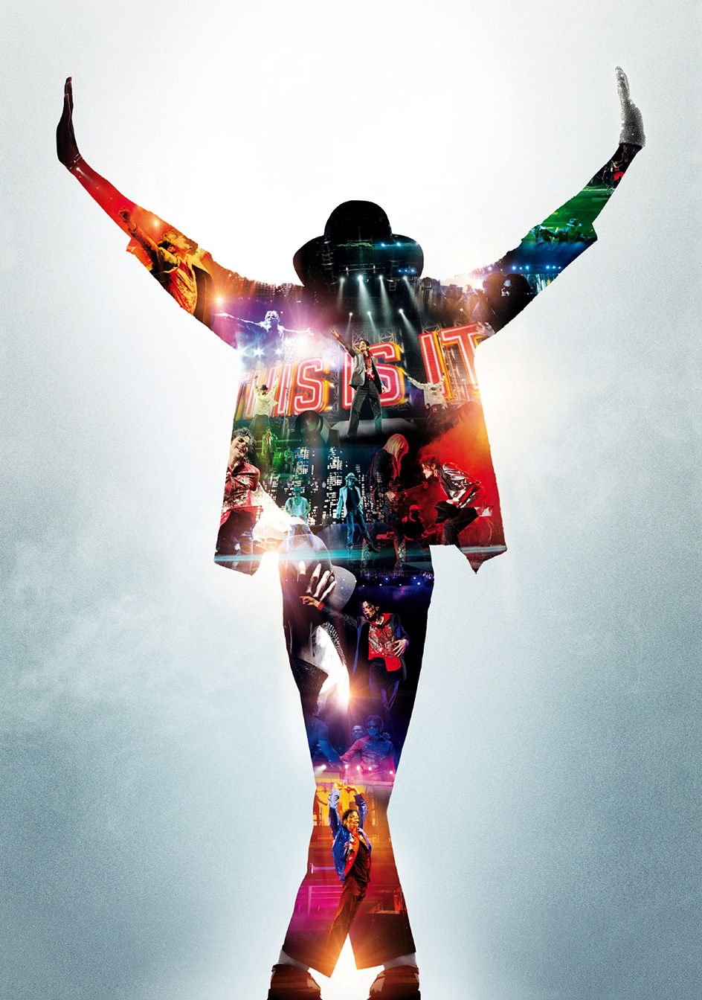
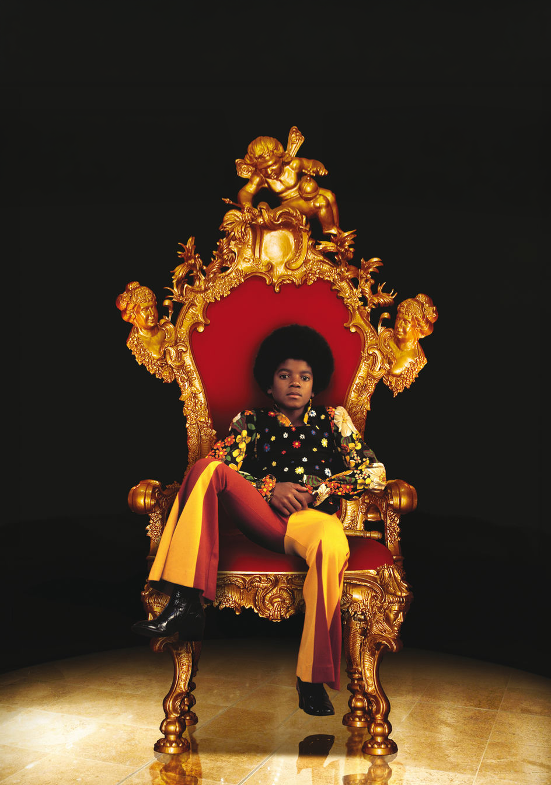
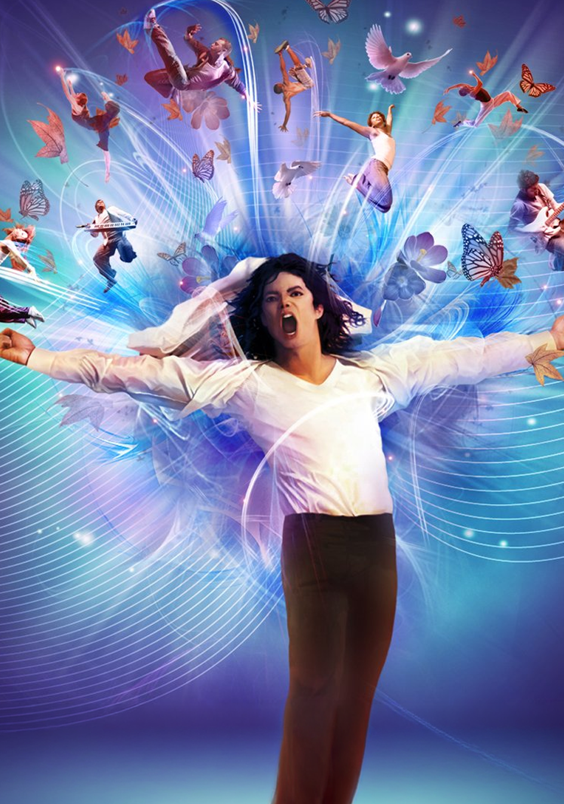
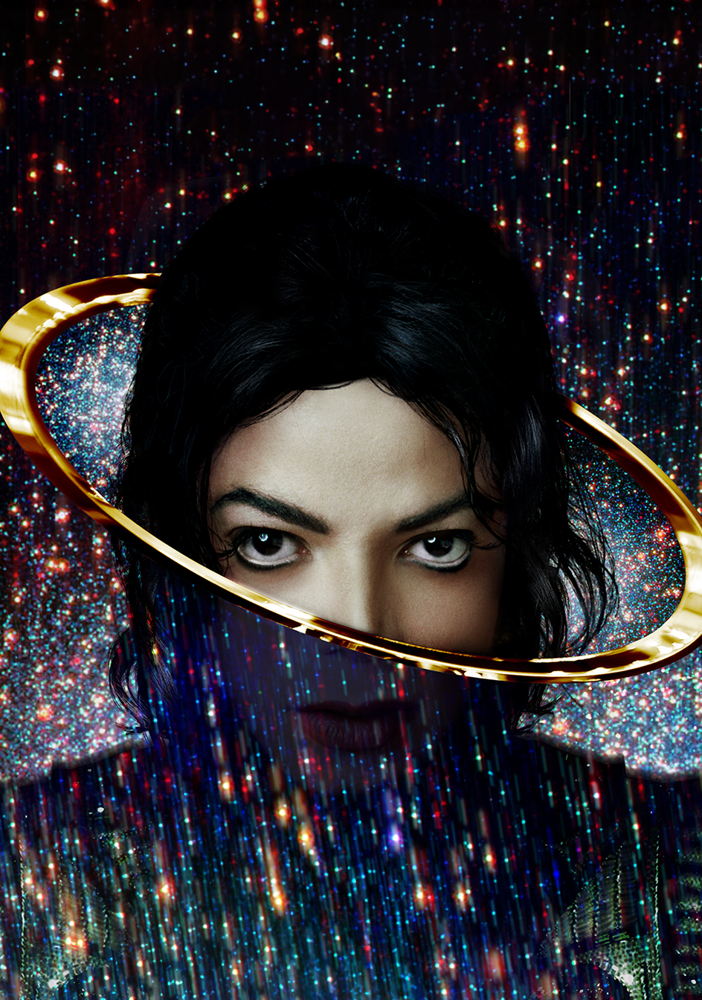
Michael's debts have been settled thanks to his earlier investment in the Sony/ATV Music catalog, which includes the publishing rights for songs of industry heavyweights such as the Beatles, the Rolling Stones, and Taylor Swift. The Jackson estate sold its share of Sony/ATV in 2016 for $750 million, and two years later, the estate received another $287.5 million for its stake in EMI Music Publishing. Additionally, Michael's earning power lasted well past his final days. In October 2017, Forbes announced that Michael had topped the publication's list of top-earning dead celebrities for the fifth straight year, earning $75 million.
Accusations of sexual abuse against Michael resurfaced in early 2019 with the airing of Leaving Neverland at the Sundance Film Festival, followed by an HBO broadcast. The four-hour documentary explores the recollections of two men who describe how the pop star lured them into his orbit when they were boys, gaining the trust of their parents, before coercing them into sexual activities in hotel rooms and at his Neverland Ranch. The Jackson estate called the two accusers "serial perjurers" and launched a $100 million lawsuit against HBO. As of December 2020, the suit planned to go into arbitration.